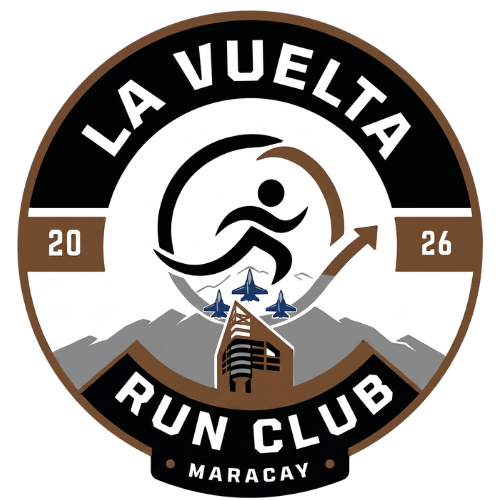

CORRE. COMPARTE. CONECTA. VUELVE.
Una comunidad que corre junta y se queda un rato más.
No somos un club elitista ni una app genérica. Somos gente activa de Maracay moviéndose junta.
Lo importante es volver. Aquí corremos en serio, pero sin creernos superiores. Todos los ritmos tienen espacio.
La marca nace de una conversación real entre panas. Gabriel acababa de llegar de Argentina y nos dimos cuenta de algo:
Hay mucha gente corriendo, pero lo hacen solos. Faltaba una comunidad fuerte, urbana, con identidad.
Así decidimos crear La Vuelta: el puente entre los que ya corren y los que quieren sumarse. Una excusa para salir a la calle, sudar y conectar.
Aún no hemos fijado la fecha exacta para nuestra primera salida oficial en Maracay, pero la comunidad ya se está armando en WhatsApp.
*Únete a nuestro grupo para enterarte antes que nadie de la fecha oficial y ruta de la primera corrida.
Totalmente. Alternamos caminar y correr. Nadie se queda atrás y siempre habrá alguien que vaya a tu ritmo.
El 80% llega solo la primera vez. Nuestra regla de oro es que el nuevo se integra. Te presentaremos a alguien apenas llegues.
Aquí se corre, no se compite. Si vas a paso suave, habrá alguien acompañándote.
Las salidas generales son 100% gratuitas. Ven, corre y comparte sin compromiso.